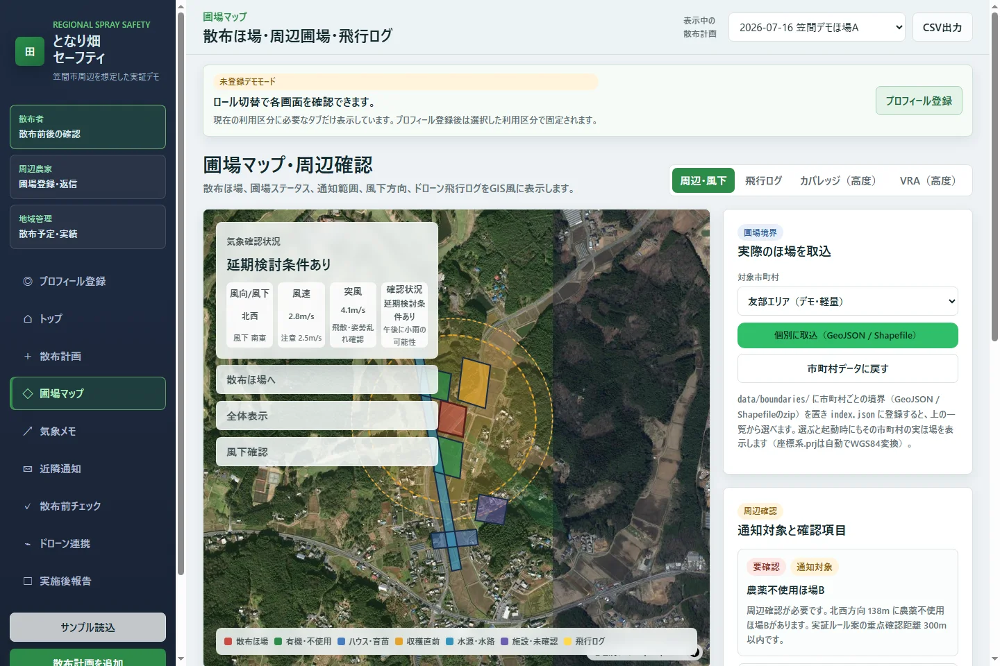

農薬・肥料・液体肥料の散布
農薬に加えて、肥料や液体肥料・葉面散布の散布計画も同じ形式で登録できます。資材ごとの使用量と面積から、必要な総量を自動計算します。
散布計画をデモで開く実証MVP散布可否の承認ではなく、確認と共有を支援
WHY
散布者が計画を立てても、周辺の有機・農薬不使用圃場や収穫直前の畑を知らなければ、配慮のきっかけを持てません。一方、周辺農家も散布予定を知らなければ、相談や作業調整ができません。
電話、紙、個別LINEに分散していた情報を、圃場と日時を軸にひとつへ。となり畑セーフティは、誰かを責めるためではなく、事前に気づき、連絡し、記録するための仕組みです。
PRODUCT
散布圃場、有機・農薬不使用圃場、ハウス・育苗、水源などを地図上で確認。散布予定と実績、通知状況、風向・風速の確認記録を利用者ごとに必要な形で表示します。散布中のカバレッジや圃場別の作業履歴も、同じ地図の文脈で確認できます。
実際の圃場マップを開く
HOW IT WORKS
判断をアプリに任せるのではなく、必要な確認が抜けない流れで、計画・確認・実行・記録をつなぎます。
日時・圃場・機体に加えて、農薬か肥料・液体肥料かの資材種別と使用量を登録します。
航空写真で周辺圃場の状況と気象予報を確認し、影響しうる近隣へ散布前に通知します。
計画の内容から飛行ルートを自動生成し、ドローン用データとして書き出します。
散布済み・未散布のエリアをリアルタイム表示し、次の散布範囲を操作者へ示します。
資材の種類、散布量、面積、日時が圃場ごとに残り、地域で共有できる記録になります。
FEATURES
散布前の確認と近隣通知に加えて、散布の実行と記録までを同じ流れで扱います。デモでは関連する計画・地図・ログ・報告画面を確認できます。
農薬に加えて、肥料や液体肥料・葉面散布の散布計画も同じ形式で登録できます。資材ごとの使用量と面積から、必要な総量を自動計算します。
散布計画をデモで開く散布計画から飛行ルートを自動生成し、ドローン用データとして書き出せます。自律実行は操作者の監視下で行い、開始・中断は操作者が判断します。
ドローン連携をデモで開く散布中は、散布済み・未散布のエリアを地図上にリアルタイム表示します。操作者へ次の散布範囲を示し、塗り残しや重複散布に気づけます。
圃場マップをデモで開く圃場単位で、使用した農薬・肥料の種類、散布量、面積、日時を確認できます。防除履歴はCSV・PDFに出力でき、地域で共有できる記録になります。
実施後報告をデモで開くFOR EVERY ROLE
各利用者には、その人の作業に必要な画面だけを表示します。未登録デモでは3つのモードを自由に切り替えられます。
01 / 散布者
散布計画、周辺確認、気象、通知、ルート生成、散布カバレッジ、作業履歴までを作業順に整理します。
02 / 周辺農家
近日の近隣散布、未返信通知、自分の圃場ステータスを確認し、簡単に返答できます。
03 / 地域管理
自治体・JA向けに、散布予定と実績、通知未完了、報告未提出などの確認キューを一覧化します。
DESIGN PRINCIPLES
このサービスは、散布可否を承認したり、被害原因を断定したりするものではありません。
01予報と実測を分けるOpen-Meteoの予報取得、散布者による確認、現地実測を別々に記録します。
02必要な範囲だけ共有する圃場位置、栽培ステータス、連絡先、返信内容の公開範囲を分けて扱います。
03承認ではなく確認を支える管理者画面は、許可ではなく計画・通知・報告の記録状況を一覧化します。
04実行の主体は操作者ルートの自動生成や自律実行も操作者の監視下で行い、開始・中断は人が判断します。
OPEN DATA & OPEN SOURCE